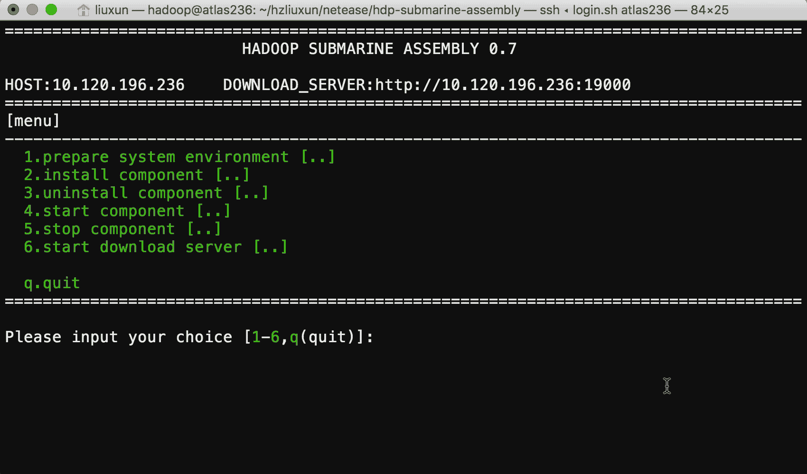

Hadoop {Submarine} is the latest machine learning framework subproject in the Hadoop 3.2 release. It allows Hadoop to support Tensorflow, MXNet,Caffe, Spark, etc. A variety of deep learning frameworks provide a full-featured system framework for machine learning algorithm development, distributed model training, model management, and model publishing, combined with hadoop’s intrinsic data storage and data processing capabilities to enable data scientists to Good mining and the value of the data.
Hadoop has enabled YARN to support Docker container since 2.x. Hadoop {Submarine} then uses YARN to schedule and run the distributed deep learning framework in the form of a Docker container.
Since the distributed deep learning framework needs to run in multiple Docker containers and needs to be able to coordinate the various services running in the container, complete the services of model training and model publishing for distributed machine learning. Involving multiple system engineering problems such as DNS, Docker, GPU, Network, graphics card, operating system kernel modification, etc. It is very difficult and time-consuming to properly deploy the Hadoop {Submarine} runtime environment.
In order to reduce the difficulty of deploying components, we have developed this submarine-installer project to deploy the Hadoop {Submarine} runtime environment, providing a one-click installation script or step-by-step installation. Unload, start, and stop individual components, and explain the main parameter configuration and considerations for each step. We also submitted a Chinese manual and an English manual for the Hadoop {Submarine} runtime environment to the hadoop community to help users deploy more easily and find problems in a timely manner.
This installer is just created for your convenience. You can choose to install required libraries by yourself.
submarine-installer currently only supports operating systems based on centos-release-7-3.1611.el7.centos.x86_64 and above.
Before deploying with submarine-installer, you can refer to the existing configuration parameters and format in the install.conf file, and configure the following parameters according to your usage:
LOCAL_DNS_HOST: server-side local DNS IP address configuration, which can be viewed from /etc/resolv.conf
YARN_DNS_HOST: yarn dns server started IP address
Machine learning is a computationally-density system that requires very high data transmission performance. Therefore, we use the ETCD network component with the least network efficiency loss. It can support the overlay network through BGP routing and support tunnel mode when deployed across the equipment room.
Please note that you can choose to use different Docker networks. ETCD is not the only network solution supported by Submarine.
You need to select at least three servers as the running server for ETCD, which will make Hadoop {Submarine} better fault tolerant and stable.
Enter the IP array as the ETCD server in the ETCD_HOSTS configuration item. The parameter configuration is generally like this:
ETCD_HOSTS=(hostIP1 hostIP2 hostIP3). Note that spaces between multiple hostIPs should be separated by spaces.
You can follow the following step to setup your Docker registry. But it is not a hard requirement since you can use a pre-setup Docker registry instead.
You first need to install an image management repository for the available docker. This image repository is used to store the image files of the various deep learning frameworks you need, and then configure the IP address and port of the mirror repository. The parameter configuration is generally the same :
DOCKER_REGISTRY=“10.120.196.232:5000”
By default, submarine-installer downloads all dependencies directly from the network (eg GCC, Docker, Nvidia drivers, etc.), which often takes a lot of time and cannot be used in environments where some servers cannot connect to the Internet. Deployment, so we built the HTTP download service in submarine-installer, you only need to run submarine-installer on a server that can connect to the Internet, you can download the dependencies for all other servers, you only need Follow these configurations:
You can get container-executor binary from either binary release package or build from source. You need to fill in the full path of the container-executor file in the YARN_CONTAINER_EXECUTOR_PATH configuration item.
Please keep the same configuration as yarn.nodemanager.linux-container-executor.cgroups.hierarchy in the yarn-site.xml configuration file of the YARN cluster you are using. If this is not configured in yarn-site.xml, Then the default is /hadoop-yarn.
Please keep the same configuration as yarn.nodemanager.local-dirs in the yarn-site.xml configuration file of the YARN cluster you are using.
Please keep the same configuration as yarn.nodemanager.log-dirs in the yarn-site.xml configuration file of the YARN cluster you are using.
submarine-installer is completely written in shell script. It does not need to install any deployment tools such as ansible. It avoids different server management specifications of different company users and causes the program to be uncommon. For example, some computer rooms do not allow ROOT users to directly remotely through SHELL. Server operation, etc.
The deployment process of submarine-installer is completely performed by selecting the operation in the menu. It avoids misoperations. You can also install, uninstall, and start any component in each step through various menu items. And the various components are stopped, and the flexibility is very good. After some components have problems, the system can also be diagnosed and repaired by submarine-installer.
submarine-installer The log information is displayed on the screen during the deployment process. The log information has three font colors:
Red font color: Indicates that the component installation has an error and the deployment has terminated.
Green text color: The component is installed properly and the deployment is working properly.
Blue text color: You need to manually enter the command in another SHELL terminal according to the prompt information. Generally, modify the operating system kernel configuration operation, and follow the prompt information to operate it.
Start submarine-installer
Run the submarine-installer/install.sh command to start. The deployment program first detects the IP address of the network card in the server. If the server has multiple network cards or multiple IP addresses configured, it will be displayed in the form of a list. Select the one you actually use. IP address.
submarine-installer Menu description：

The deployment process is as follows:
Refer to the configuration instructions to configure the install.conf file based on your server usage.
Copy the entire submarine-installer folder to all server nodes
First in the server configured as DOWNLOAD_SERVER
Run the submarine-installer/install.sh command
Select the [start download server] menu item in the installation interface, and wait for the download of each dependency package to start the HTTP service.
Run the submarine-installer/install.sh command to display the following menu in the main menu [Main menu]:
prepare operation system
Check the operating system and version of the deployment server;
prepare operation system kernel
Display the prompt information of the operation command of the operating system kernel update, and automatically update the kernel version according to your choice;
prepare GCC version
Display the prompt information of the operation command of the current GCC version kernel update in the operating system and whether to automatically update the GCC version according to your choice;
check GPU
Check if the server can detect the GPU graphics card;
prepare user&group
Display the prompts for adding user and user group operation commands for hadoop and docker. You need to check whether there are any required users and user groups in the server according to the prompt information.
prepare nvidia environment
Automatically update the operating system kernel and header files, and automatically install epel-release and dkms;
Display the prompt information for modifying the operation command of the system kernel parameter configuration, you need to open another terminal according to the command sequence;
instll etcd
Download the bin file for etcd and install it in the /usr/bin directory;
Generate the etcd.service file according to the ETCD_HOSTS configuration item and install it into the /etc/systemd/system/ directory.
instll docker
Download docker’s RPM package for local installation;
Generate the daemon.json configuration file and install it into the /etc/docker/ directory.
Generate the docker.service configuration file and install it into the /etc/systemd/system/ directory.
instll calico network
Download the calico, calicoctl, and calico-ipam files and install them in the /usr/bin directory.
Generate the calicoctl.cfg configuration file and install it into the /etc/calico/ directory.
Generate the calico-node.service configuration file and install it into the /etc/systemd/system/ directory.
After the installation is complete, the calico network will be automatically created in the container according to the CALICO_NETWORK_NAME configuration item, and two Docker containers will be created automatically to check whether the two containers can even ping each other.
instll nvidia driver
Download the nvidia-detect file to detect the graphics card version in the server;Download the nvidia-detect file to detect the graphics card version in the server;
Download the Nvidia graphics driver installation package according to the graphics card version number;
Check if the Nouveau is disabled in this server. If the installation is not stopped, you need to execute the [prepare nvidia environment] submenu item in the [prepare system environment] menu and follow the prompts.
If Nouveau has been disabled in this server, it will be installed locally;
instll nvidia docker
Download the nvidia-docker RPM installation package and install it;
Display the command prompt information to detect whether nvidia-docker is available. You need to open another terminal to execute according to the command sequence.
instll yarn container-executor
Copy the container-executor file to the /etc/yarn/sbin/Linux-amd64-64/ directory according to the YARN_CONTAINER_EXECUTOR_PATH configuration item;
Generate the container-executor.cfg file according to the configuration and copy it to the /etc/yarn/sbin/etc/hadoop/ directory.
instll submarine autorun script
Copy the submarine.sh file to the /etc/rc.d/init.d/ directory;
Add /etc/rc.d/init.d/submarine.sh to the /etc/rc.d/rc.local system self-starting file;
Delete the BIN file and configuration file of the specified component, not in the retelling
Restart the specified component, not repeat
Stop specifying component, not repeating
This operation can only be performed on the server where the DOWNLOAD_SERVER_IP configuration item is located;